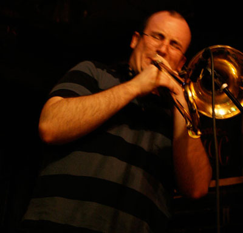
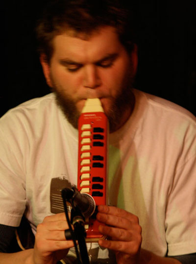
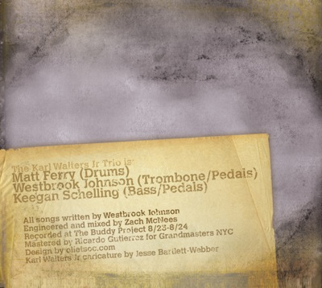

The Karl Walters Jr Trio
Stay up to date with all things concerning the Karl Walters Jr Trio by signing up for our email list. This list is the best way to keep track of our shows, where to get new CDs, where to download FREE live tracks, and anything else you'd want to know about the band. I love it, and I know you'll love it too!
Check it out... we are currently being featured on The Independent Music Awards website. Our Submission Spotlight will give you a rundown on our thoughts on being Independent musicians, as well as current and future plans for the band while we cross our fingers for a 9th Annual Independent Musc Award!
The Karl Walters Jr Trio is proud to present their debut album Can We Go Back Where We Began?. With the help of The Buddy Project Studio, recording engineer Zach McNees, mastering engineer Ricardo Gutierrez and graphic designer Tony Costello, the new album will be released on the 23rd of October in correlation with a performance at Freddy's Backroom in Brooklyn at 9pm. It would be our most distinct pleasure to have you there as our guest.
Our track "Wait Till You See" from Can We Go Back Where We Began? is currently being featured on NPR affiliate WGLT's Jazz Next Podcast. WGLT's Jon Norton calls us an artist "you need to know about", and goes on to announce that we've "crafted a sound all [our] own."
You don't have to take his word for it, or ours for that matter...right now you can purchase a download of our debut CD Can We Go Back Where We Began? for just $5. Once you're done taking a listen, shoot over to the iTunes store and write us a review so the whole world can know how awesome you think it is! If you're not quite ready to part with $5 (people have got to buy lunch in this economy somehow), keep your heads up for free live show downloads in the coming weeks.
Right now you can see Can We Go Back Where We Began? featured at the HTML Times. Written by Jesse Alejandro, the review delves into the depths of the CD, and makes available raw ProTools sessions for you to remix select tracks from the album as you see fit. When you're done reading, be sure to share your thoughts on the CD in the comments section as well!
Can We Go Back Where We Began? has also been featured on Music Blog Space. Read the great review by Andrea Baquero, who might just have created for us a genre of music to call our very own. Let her know what you think about her creation, and learn more about our CD release show, Thursday, 9pm at Freddy's Backroom!
The CD is now available!! You can order a physical copy of the CD right now at CD Baby. OR, you can visit us at Bandcamp where you can purchase CD quality downloads of the whole CD right now!! You can also check out some really cool visualizations of our music: their player is really cool and it is amazingly easy to share through MySpace and Facebook, and even embed onto your own webpage or blog...so what are you waiting for? Start sreading the word!
Shows
Come see us live at the following shows:
- Upcoming Shows
- November 8th @ 7pm: 58N6 Media Labs (Brooklyn)
- Check back soon for more shows.
- For booking inquires, contact kwjtrio@kwjtrio.com.
Band
"THE KARL WALTERS JR TRIO" is Westbrook Johnson (trombone/ firmament separation), Keegan Schelling (bass and tsunamis), and Matthew Ferry (drums/ volcanic eruptions). The music of this unique ensemble hearkens back to the touching, grassroots honesty of the Jazz tradition, while peering into the future with childlike, questioning eyes. The group's clear, improvisational communication brings to life Johnson's solid compositions, in an entertaining evening for fans of all genres.
The KWJ Trio SOUNDS like two ice cream trucks crashing into eachother at full speed, their refrigerators exploding cake-soft ice cream sandwiches across the neighborhood.
The KWJ Trio FEELS like your third kiss, the one when your tongue learned that making out is less a mosh pit and more a ballet.
The KWJ Trio TASTES like croutons, that Trojan Horse of spiced carb indulgence that cleverly infiltrated that holiest of holy health sanctuaries, the salad.
A KWJ Trio LOOKS like that one night at the neon slot machines when you somehow evaded the bubbling free drinks and dizzying Vegas boob jobs long enough to leave the casino while you were up 17 dollars.
Matthew Ferry is a percussionist, composer and vocalist in Brooklyn, NY. Matthew graduated from Hofstra University in 2007, studying composition with Herbert Deutsch and music for dance with Arthur Solari. An active composer and accompanist for dance, he has performed with many choreographers including Charles O Anderson, Paul Matteson, Martha Clarke, Stormy Brandenberger, Maxine Steinman, Robin Becker, Dyane Harvey-Salaam and Errol Grimes. As a vocalist, he has sung with the National Men and Boys Choir, The Milleridge Singers, Harrisburg Opera Theater. While in college, Matthew co-founded the GWM Singers in Roslyn, NY. Since moving to NYC in 2007, Matthew has been a sideman and studio drummer for jazz, rock, and folk bands.
Matthew is also a dance accompanist for Princeton University, Complexions Ballet, Hofstra University, Limon Dance, Peridance, and ACDFA. Matthew currently serves on the board of directors of The Guernica Project, is co-founder of the acoustics innovations company MagMa Technologies, and is Administrative Director for the collaborative-arts group VisionIntoArt.
Trombonist and composer Westbrook Johnson made his way to Brooklyn, NY from San Antonio, TX via Vermont where we graduated from Bennington College in 2006. He's studied trombone with Brian Drye and Josh Roseman, composition with Kitty Brazelton and Allen Shawn and performance theory with Milford Graves and Bruce Williamson. In 2004 Westbrook began co-leading ensembles presenting original music and in the winter of 2007 he formed The Karl Walters Jr Trio as the main outlet for his compositional work. Recently Westbrook has worked with the Creative Music Workshop of NYC as well as the School for Improvised Music, as well as Jesse Alejandro and the Big Fatt. He is also active as a web designer/programmer with his company Designs by WJ.
Keegan Schelling
Growing up in beautiful Western Massachusetts, Keegan first picked up a bass guitar when looking for something to fill the void that was previously occupied by a full time hockey habit, thus beginning down the slope into musicianship. What a slippery slope it was. Before long, he was a member of the group "subject to change". After high school, Keegan was ready to join the group that would become The Karl Walters Jr. Trio and the rest is history. In between gigs, Keegan is a professional bike mechanic, and is a freelance sound engineer.
Plus, he's a rapper.
John Welsh
Hailing from Arizona via foreign countries too numerous to count, multi-instrumentalish John Welsh adds the cheeky irreverence of a three armed sideshow performer by way of guitar, melodica and various percussion to the turbulent seas of the Karl Walters Jr Trio. Listen for his jocularly incidental compositions to enlarge the iron fist with which Karl rules your very existance.
Currently attending the New School for Jazz studies, Welsh hopes to one day rule the world with minimalist dissonances and unruly facial hair.
Music
Westbrook Johnson Solo Trombone July 21, 2009
- They Were a Strange People
- Three Roads
- Melodica in Cm
- No Tuplets into Free
- Tantrumplets
- Urisaglo
- Them Notes
- In Search of Something New
- Three Roads
Westbrook had his debut Solo Trombone show on the 21st of July 2009 at Freddy's Backroom in Brooklyn, NY. The show featured a number of Karl Walters Jr Trio standards with heaping helping of free improvisation as well as a preview of his new composition "Three Roads Diverged," which was conceptualized using a custom notiation system that places equal weight on composition and improvisation in each note. Download Solo Trombone July 21, 2009 in it's entirety as a 60.2 MB .ZIP file. Stay tuned for individual track downloads soon!
Live at Super Happy Fun Land (2-16-07)
- Fluxura [ Download ]
- Believe [ Download ]
- Thoughts on the End of Winter [ Download ]
- Man in the Raindrop [ Download ]
- Precipice of a Moment [ Download ]
- Forget About [ Download ]
- Cait's Park [ Download ]
- Physical Science/Off Balance [ Download ]
- In Search of Something New [ Download ]
- Someday I'll Travel [ Download ]
- Late at Night I Lay Awake [ Download ]
Right click a "Download" link above and select "Save As..." to save Live at Super Happy Fun Land mp3s.
Contact
To contact The Karl Walters Jr Trio or for booking concerns, please send us an email at kwjtrio@gmail.com
Learn even more about The Karl Walters Jr Trio at the following web site:
Check out more music by the members of The Karl Walters Jr Trio: